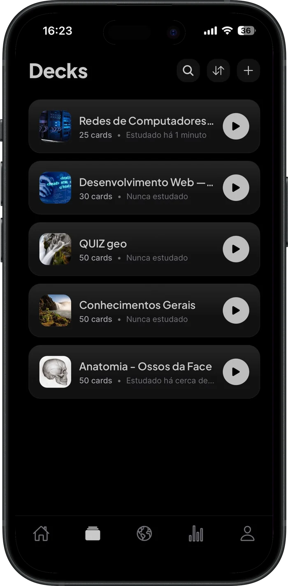
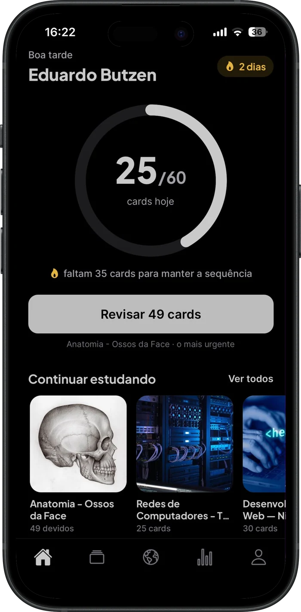
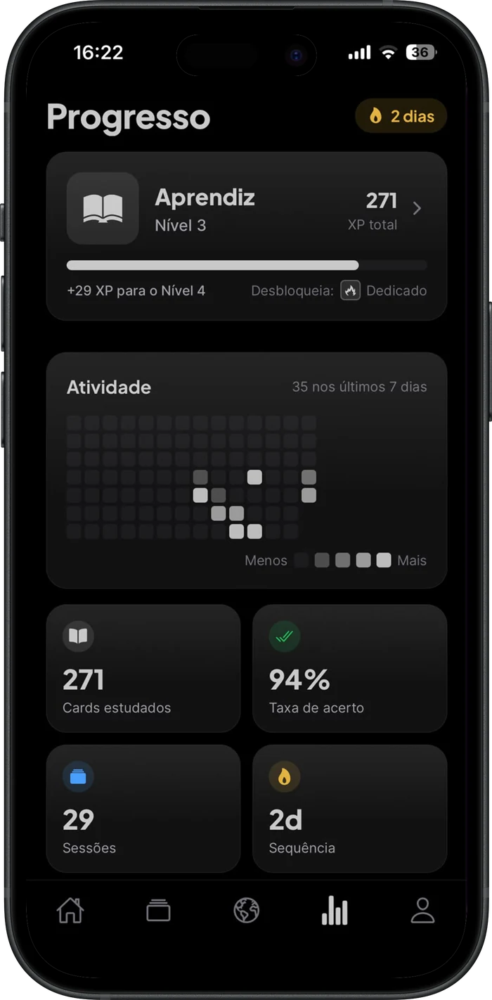
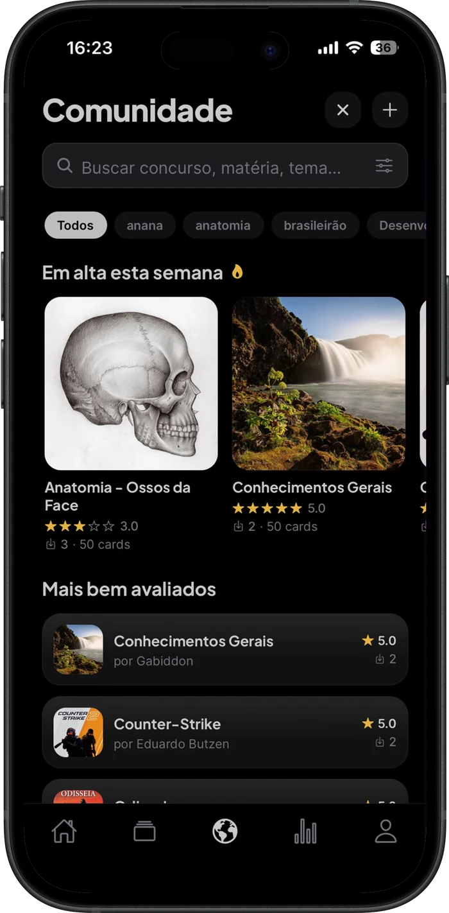

Digitar card é mais lento que estudar
Uma apostila inteira vira horas de copiar e colar antes da primeira revisão — e aí o ânimo já foi.
Ainda não publicamos nas lojas. Avisamos você no dia.



6
formatos de entrada
4
modos de prática
SM‑2
o algoritmo do Anki
73
conquistas
7
patentes de nível
O problema
Você já tem o material certo. O que falta é o trabalho chato que fica entre ele e a revisão.
Uma apostila inteira vira horas de copiar e colar antes da primeira revisão — e aí o ânimo já foi.
Add-ons, perfis, quatro botões de avaliação. Poder de sobra para quem só quer revisar direito.
Gráfico, esquema, corte anatômico: é o que mais cai na prova e o que nenhum gerador de cards leva junto.
Do material ao deck
PDF, PowerPoint, Word, uma foto do caderno, um texto colado — ou só digite o tópico e deixe a IA levantar o conteúdo.
Até 25 MB e 80 páginas por arquivo. Passou disso, o Blink processa o que cabe e avisa.
Perguntas e respostas saem do seu conteúdo, não de um resumo genérico da internet. Tabelas viram markdown e as notas do apresentador entram na conta.
Claude Sonnet 5 para documentos, Claude Haiku 4.5 para tópicos e correção.
A repetição espaçada agenda cada card. Você abre o app, revisa o que está devido e fecha.
Um lembrete diário avisa quantos cards estão esperando — o número real, não um empurrão genérico.
O diferencial
Um extrator próprio abre o arquivo, recorta cada ilustração com posição e legenda, e um ranking escolhe as que valem virar card. Você só confirma.
O que o extrator devolve
Cada item vem com a página de origem. O que você aprovar vira imagem de card; o resto é descartado.
Repetição espaçada
O mesmo algoritmo SM-2 que sustenta o Anki, com a decisão reduzida ao que você realmente consegue responder no automático: Errei ou Entendi — no botão ou no swipe.
Um card, ao longo do tempo
Você não escolhe o intervalo. Só responde.
Quatro modos
Porque reconhecer a resposta é fácil demais quando você já viu o card umas dez vezes.
Vire o card e avalie a sua resposta. Botão ou swipe.
Múltipla escolha com alternativas suas ou geradas pela IA.
Você digita e a IA corrige por sentido, não por letra igual.
Flashcard e quiz intercalados: alternado 1 a 1 ou aleatório 50/50.
Toda sessão termina com acertos, tempo e taxa de acerto — e um cronômetro regressivo se você quiser pressão.
Hábito e progresso
Escolha de 10 a 150 cards por dia e acompanhe o anel fechar. A sequência conta os dias seguidos — com alerta opcional quando ela está prestes a cair.
Um ano inteiro de estudo em um quadro só, no estilo GitHub. Dá para ver de longe onde você sumiu.
Cada card revisado vale 1 XP e cada nível custa um pouco mais que o anterior. No topo, duas patentes em dourado que ninguém alcança por acidente.
Todas são calculadas sobre o seu histórico completo: nenhuma expira, e as novas desbloqueiam retroativamente pelo que você já fez.
Comunidade
Compartilhar não devia significar abrir mão. Ao publicar, você escolhe a licença — e ela é respeitada na hora do download.

Outras pessoas estudam o seu deck, mas não conseguem exportar em arquivo nem republicar.
Podem levar o deck para fora do app em arquivo, mas não publicar como se fosse deles.
Liberado para exportar e publicar adaptações — sempre com o crédito de volta para você.
Deck adaptado mostra “Adaptado de …”. A origem não some no caminho.
Quem baixou fica com a própria versão — editar o original não muda o deck de ninguém.
Denúncias têm fila e a remoção sai do ar no banco, não só na tela.
Privacidade
Todas as tabelas têm RLS: cada conta só alcança os próprios dados, no nível do banco.
Nenhum segredo viaja no aplicativo. As chaves ficam nas Edge Functions, fora do bundle.
Apagar a conta é um botão, e o apagamento é de ponta a ponta — como a Apple exige.
O material enviado é processado por IA de terceiros (Anthropic e Google). Está escrito na política, sem letra miúda.
Depoimentos
Joguei o PDF de 60 páginas da aula e voltaram 40 cards já com os gráficos do próprio material. Era exatamente o que eu passava o domingo fazendo à mão.
Larguei o Anki porque eu perdia mais tempo configurando do que revisando. Aqui é só errei ou entendi, e o resto ele resolve.
As figuras virarem card mudou meu estudo de anatomia. Reconhecer a imagem já é metade da prova.
Uso o modo Escrever para treinar resposta discursiva. A correção entende o sentido em vez de exigir a palavra exata.
A sequência me pegou. Quarenta dias sem falhar, coisa que planilha nenhuma tinha conseguido antes.
Subo o slide do professor antes da aula e chego na sala com os cards prontos. Virou parte da rotina.
Baixei um deck da comunidade na véspera e ainda deu tempo de revisar tudo pelo menos uma vez.
Quiz e flashcard alternados quebram aquele automático de decorar a posição da resposta na tela.
Meta de 30 cards por dia, cinco minutos na fila do bandejão. É o único app de estudo que eu abro sem culpa.
Conteúdo de exemplo — substituir por depoimentos reais antes de publicar.
Planos
R$ 0 / para sempre
Em breve · preço a definir
O limite de gerações é verificado no servidor — nunca no aparelho.
Perguntas
O motor é da mesma família: SM-2, o algoritmo que o Anki usa. A diferença está nas pontas. De um lado, o Blink monta o deck a partir do seu arquivo, com as figuras dele. Do outro, a avaliação é binária — Errei ou Entendi — em vez de quatro botões que exigem calibrar o quanto você lembrou.
O material é enviado para processamento por IA de terceiros (Anthropic, com fallback para Google) e o que fica na sua conta são os cards gerados e as imagens que você aprovou. Cada conta só acessa os próprios dados, garantido por Row Level Security no banco. Os detalhes estão na Política de Privacidade.
Gerar cards com IA e sincronizar entre aparelhos precisam de internet — o processamento acontece no servidor. A geração é o momento que exige conexão; o estudo em si é leve e local.
O plano Free é gratuito e inclui 300 gerações por IA por mês, além de decks e cards ilimitados criados por você. O preço do Pro ainda não foi definido — quem entrar na lista de espera fica sabendo primeiro.
PDF, PowerPoint (.pptx), Word (.docx) e imagem. Também dá para colar um texto ou simplesmente digitar o tópico. O limite por arquivo é de 25 MB e 80 páginas ou slides; se passar disso, o Blink processa o que couber e avisa em vez de falhar.
Sim. Decks que são seus podem ser exportados e importados em arquivo, com resolução de conflito (copiar, pular ou substituir) quando algo já existir. Decks baixados da comunidade seguem a licença escolhida por quem publicou.
Toda a interface é em português brasileiro, do onboarding às conquistas. E o app é feito para celular, em iOS e Android.
Lançamento
Deixe seu e-mail e avisamos no dia em que o app entrar na App Store e no Google Play. Nada além disso.